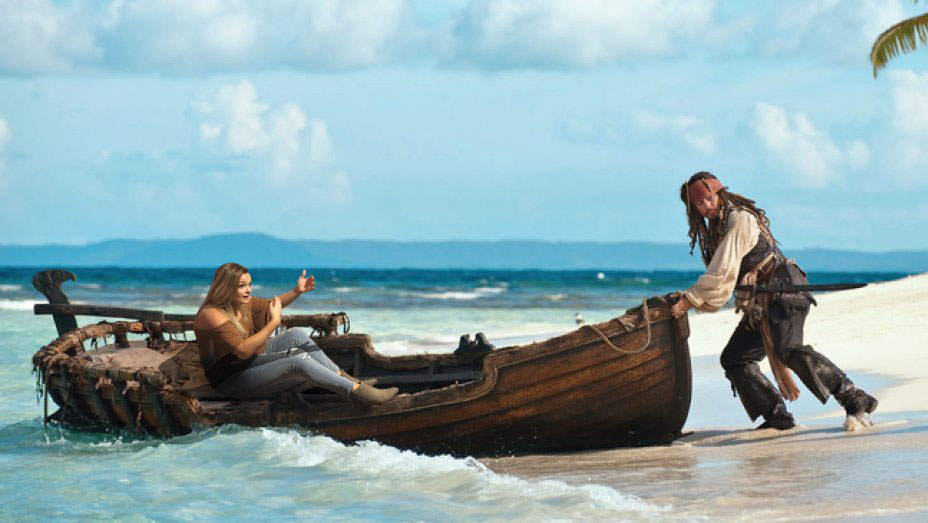
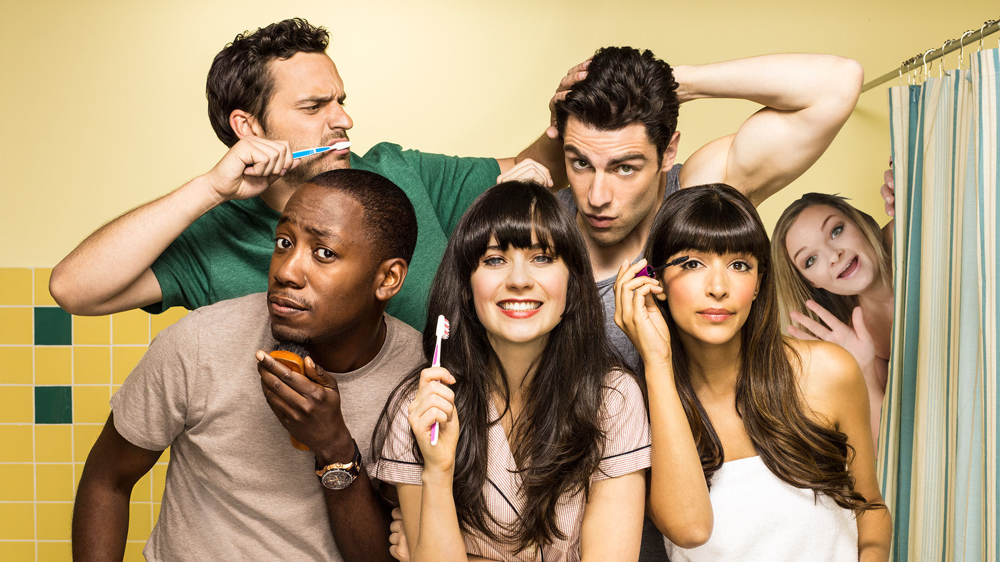
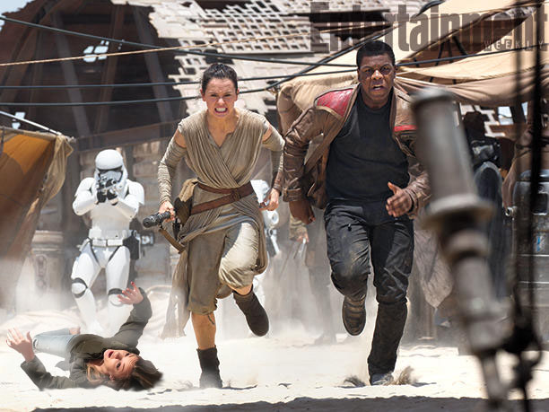

PcCarthy played the role of Monica, who was one of the girls in the elite social group called "the Plastics". No one knew she was even in the movie.

PcCarthy played the role of "Islander trying to escape with Captain Jack Sparrow". This scene was later cut from the movie, but she appeared as a background person on the island of Tortuga in later scenes.

PcCarthy played Kylie, a role as a roommate along with the characters Jess, Nick, Schmidt, Winston, and Coach. PcCarthy never made any of the scenes chosen to air, but somehow managed to stay on board with the cast for every season. Her co-star, Zooey Deschanel, had no recollection of PcCarthy when asked how she liked working with her.

PcCarthy played the role of a background Jakku scavenger. Her screen time was two seconds long.